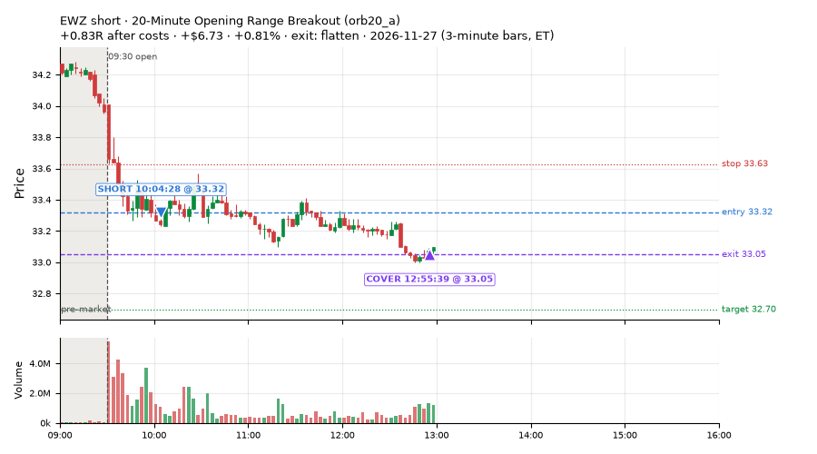
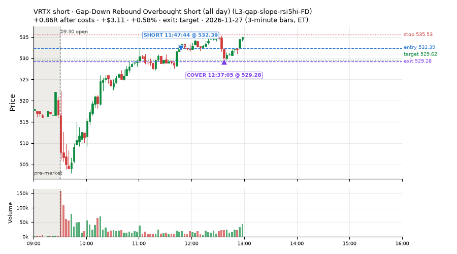
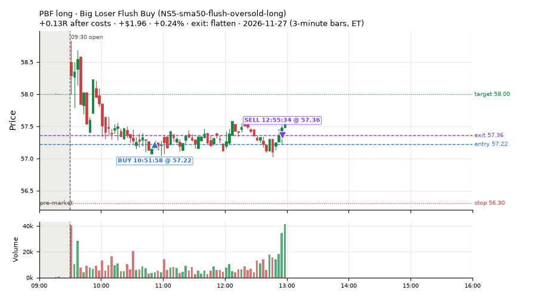
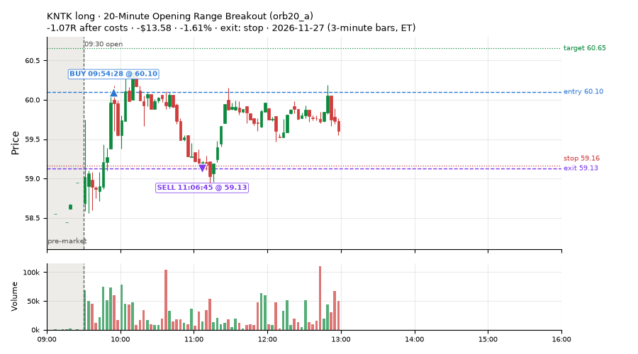
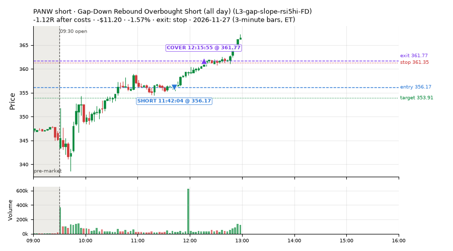
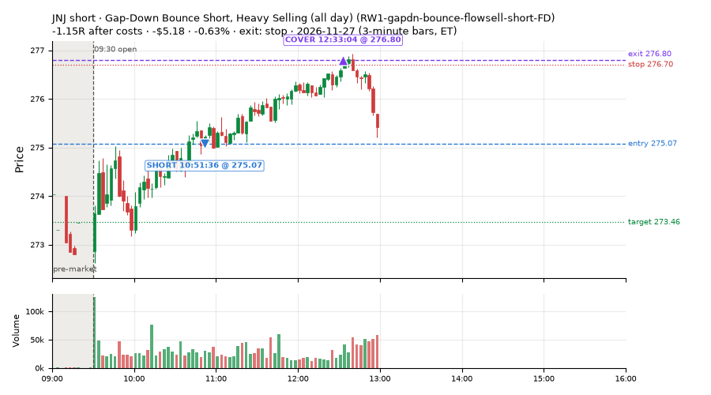

18 trades · win rate 39% · P/L $-37.80
PROBATION: no live setup has passed both locked test periods. 10 owner-directed setups added 2026-10-08 (MarcoFlow top 5 + 5 new), untested live. RW6G1 (RW6 + VWAP band guard) added 2026-10-09, probation.

| Symbol | Setup | Side | In | Out | Entry | Exit | Exit reason | % gained | P/L |
|---|---|---|---|---|---|---|---|---|---|
| EWZ | 20-Minute Opening Range Breakout (orb20_a) | short | 10:04 | 12:55 | 33.32 | 33.05 | flatten | +0.81% | $6.73 |
| VRTX | Gap-Down Rebound Overbought Short (all day) (L3-gap-slope-rsi5hi-FD) | short | 11:47 | 12:37 | 532.39 | 529.28 | target | +0.58% | $3.11 |
| PBF | Big Loser Flush Buy (NS5-sma50-flush-oversold-long) | long | 10:51 | 12:55 | 57.22 | 57.36 | flatten | +0.24% | $1.96 |
| Symbol | Setup | Side | In | Out | Entry | Exit | Exit reason | % lost | P/L |
|---|---|---|---|---|---|---|---|---|---|
| KNTK | orb20_a | long | 09:54 | 11:06 | 60.10 | 59.13 | stop | -1.61% | $-13.58 |
| PANW | L3-gap-slope-rsi5hi-FD | short | 11:42 | 12:15 | 356.17 | 361.77 | stop | -1.57% | $-11.20 |
| PANW | L3-gap-slope-lowdist-FD | short | 11:26 | 12:15 | 356.13 | 361.44 | stop | -1.49% | $-10.62 |
| USFD | RW1-gapdn-bounce-flowsell-short-FD | short | 10:26 | 11:44 | 111.59 | 112.38 | stop | -0.71% | $-5.53 |
| JNJ | RW1-gapdn-bounce-flowsell-short-FD | short | 10:51 | 12:33 | 275.07 | 276.80 | stop | -0.63% | $-5.18 |






Signal to fill: median 1s, 90th percentile 2s (18 trades). Bars close each minute; the order follows the bar close.
Best excursion (MFE): median 0.38R; worst (MAE) median 0.57R. 33% of trades never got +0.25R in our favour; 0 reached +1R and still closed at or below 0.
| Symbol | Setup | Best R | Worst R | Closed R |
|---|---|---|---|---|
| USFD | RW1-gapdn-bounce-flowsell-short-FD | +0.29 | -1.00 | -1.09 |
| KNTK | orb20_a | +0.28 | -1.01 | -1.07 |
| PANW | L3-gap-slope-rsi5hi-FD | +0.14 | -1.02 | -1.12 |
| PANW | L3-gap-slope-lowdist-FD | +0.18 | -1.03 | -1.07 |
| JNJ | RW1-gapdn-bounce-flowsell-short-FD | +0.06 | -1.07 | -1.15 |
| Entry time | Trades | Win | Avg R | P/L |
|---|---|---|---|---|
| 09:50-10:30 | 3 | 33% | -0.44 | $-12.38 |
| 10:30-11:30 | 11 | 36% | -0.29 | $-17.93 |
| 11:30-13:00 | 4 | 50% | -0.03 | $-7.49 |
| Setup | Trades | Win | Avg R after costs | Adj R (net of SPY) | Avg R ex-market (all sessions) | P/L |
|---|---|---|---|---|---|---|
| Gap-Down Bounce-off-Low Fade (all day) (L3-gap-slope-lowdist-FD) | 1.0 | 0% | -1.07 | -0.96 | -0.18 (beta -1.29, n 312) | $-10.62 |
| Gap-Down Rebound Overbought Short (all day) (L3-gap-slope-rsi5hi-FD) | 3.0 | 33% | -0.11 | -0.09 | -0.19 (beta -1.07, n 460) | $-8.76 |
| Big Loser Flush Buy (NS5-sma50-flush-oversold-long) owner-directed; holdouts once: Sep-Oct -0.008R n73, Apr-Jun +0.002R n231 | 1.0 | 100% | +0.13 | -0.01 | +0.04 (beta +1.09, n 21) | $1.96 |
| Gap-Down Bounce Short, Heavy Selling (all day) (RW1-gapdn-bounce-flowsell-short-FD) | 8.0 | 25% | -0.41 | -0.15 | -0.16 (beta -0.79, n 238) | $-15.14 |
| RSI Collapse Dip Buy (all day) (ST7-rsi50dn-long-pm-t1s1-FD) | 3.0 | 67% | +0.04 | -0.10 | +0.18 (beta +0.76, n 23) | $1.61 |
| 20-Minute Opening Range Breakout (orb20_a) failed Apr-Jun holdout: -0.040R/trade over 421 trades | 2.0 | 50% | -0.12 | +0.14 | -0.08 (beta +0.10, n 42) | $-6.85 |
Market direction (SPY, beta 1) accounted for $-13.29 of today's $-37.80; the rest ($-24.51) came from the setups themselves. Avg R net of SPY: -0.14 (incl. a hedge leg's cost; report only).
10 setups live today. Today: 56 signals, 18 taken, 0 lost because another setup held the symbol (0%). Since 2026-10-09 (35 sessions): 14608 signals, 5121 taken, 770 lost to other setups (5%). Peak open positions today 14 of 400 slots. Earnings blackout removed 138 symbols before scanning.
Simulated playing time (not live): 9138 what-if trades of signals not taken, avg -0.25R, 42% winners; of them 617 lost to another setup (avg +0.02R).
Silent: IDX1-qqq100-0955-TQQQ-trail, IDX1-qqq100-0955-TQQQ-hold, IDX2-spy075-0945-3x-trail, IDX3-spy075-0955-3x-trail, IDX5-spy050-0945-3x-trail · Crowded out: RW4-ns3-adv150-short-FD, RW4-ns3-adv150-short, NS3-failed-vwap-reclaim-short-FD · Starved: orb20_a, MF1-945-flowsell-vwapup, RW6G1-ns2-up3-vwap2sd-short, LIQ-pdl-sweep-open15-vwap-long, MF5-flowsell-vwapup-rsi5hi, ST5-pdbrkup-short-mid-t05s1-FD, ST3-rsi5up-short-pm-t1s1-FD, exhaustion_short-FD, NS2-sma50break-overbought-short, MF1-945-flowsell-vwapup-FD
| Prio | Setup | Today sig / taken | Sessions | Signals / taken / trades | Taken/day | Expected/day | Lost to other setups | Lost to (setup n) | Top skip reasons | SIMULATED: not-taken n / avg R / win | Verdict |
|---|---|---|---|---|---|---|---|---|---|---|---|
| 1 | Gap-Down Bounce Rejection Short (10% gap) CWT09-gapdn-bounce-g10-lowerhalf-short | 6 / 0 | 11 | 224 / 8 / 8 | 0.73 | – | 0 | – | not shortable / shorts off 205, spread / quote / size 5, other 4 | 215 / -0.57R / 22% | slow 3.6 entries/week; ~16 weeks to 60 trades |
| 2 | Gap-Down VWAP Loss Short (10% gap) CWT09-gapdn-vwaploss-g10-short | 14 / 0 | 11 | 226 / 13 / 13 | 1.18 | – | 0 | – | not shortable / shorts off 206, spread / quote / size 5, price through stop/target 2 | 212 / -0.66R / 18% | slow 5.9 entries/week; ~10 weeks to 60 trades |
| 3 | Afternoon Higher-Low Long (near-miss) NM-HL-T75-pm-long | 0 / 0 | 11 | 29 / 23 / 23 | 2.09 | – | 0 | – | spread / quote / size 6 | 6 / -0.38R / 17% | slow 10.5 entries/week; ~6 weeks to 60 trades |
| 4 | Big Gainer Dip-and-Pop NS1-rsidip-rsi5pop-long | 0 / 0 | 12 | 20 / 11 / 11 | 0.92 | 0.92 | 0 | – | spread / quote / size 5, price through stop/target 2, other 2 | 9 / +0.32R / 89% | slow 4.6 entries/week; ~13 weeks to 60 trades |
| 5 | Gap-Down Bounce-off-Low Fade (all day) L3-gap-slope-lowdist-FD | 6 / 1 | 34 | 1202 / 312 / 312 | 9.18 | 9.76 | 9 | RW6-ns2-up3-short-FD 3, NS2-sma50break-overbought-short-FD 3, L3-gap-slope-rsi5hi-FD 3 | not shortable / shorts off 330, other 215, spread / quote / size 214 | 880 / -0.38R / 33% | ok 45.9 entries/week |
| 6 | Gap-Down Rebound Overbought Short (all day) L3-gap-slope-rsi5hi-FD | 10 / 3 | 19 | 3003 / 460 / 460 | 24.21 | 13.41 | 12 | L3-gap-slope-fromopen-FD 8, L3-gap-slope-lowdist-FD 5, RW6G1-ns2-up3-vwap2sd-short-FD 2 | other 1266, not shortable / shorts off 602, spread / quote / size 407 | 2514 / -0.39R / 36% | ok 121.1 entries/week |
| 7 | 20-Minute Opening Range Breakout orb20_a | 3 / 2 | 34 | 123 / 42 / 42 | 1.24 | 6.79 | 0 | – | trigger missed between polls 33, spread / quote / size 21, other 13 | 73 / +0.04R / 51% | starved 1.24 entries/day vs ~6.79 expected |
| 8 | Gap-Down Bounce Short, Heavy Selling (all day) RW1-gapdn-bounce-flowsell-short-FD | 11 / 8 | 18 | 388 / 238 / 238 | 13.22 | 17.10 | 10 | RW3-gapdn-rsi5pop-flowsell-short-FD 5, MF2-open-rsimidhi-flowsell-FD 3, RW5-heat30-flowsell-rsi5pop-gapdn-short-FD 3 | spread / quote / size 75, other 43, not shortable / shorts off 21 | 148 / +0.05R / 55% | ok 66.1 entries/week |
| 9 | Big Loser Flush Buy NS5-sma50-flush-oversold-long | 2 / 1 | 7 | 28 / 21 / 21 | 3.00 | 2.41 | 0 | – | spread / quote / size 6, other 1 | 7 / +0.28R / 71% | ok 15.0 entries/week |
| 10 | RSI Collapse Dip Buy (all day) ST7-rsi50dn-long-pm-t1s1-FD | 4 / 3 | 14 | 31 / 23 / 23 | 1.64 | 2.17 | 1 | orb20_a 1 | other 4, spread / quote / size 2, symbol held by another setup 1 | 8 / +0.10R / 62% | slow 8.2 entries/week; ~7 weeks to 60 trades |
Every trade is attached as a CSV you can open and edit in Excel or Google Sheets. Live page: https://misiti15.github.io/MCF/live/